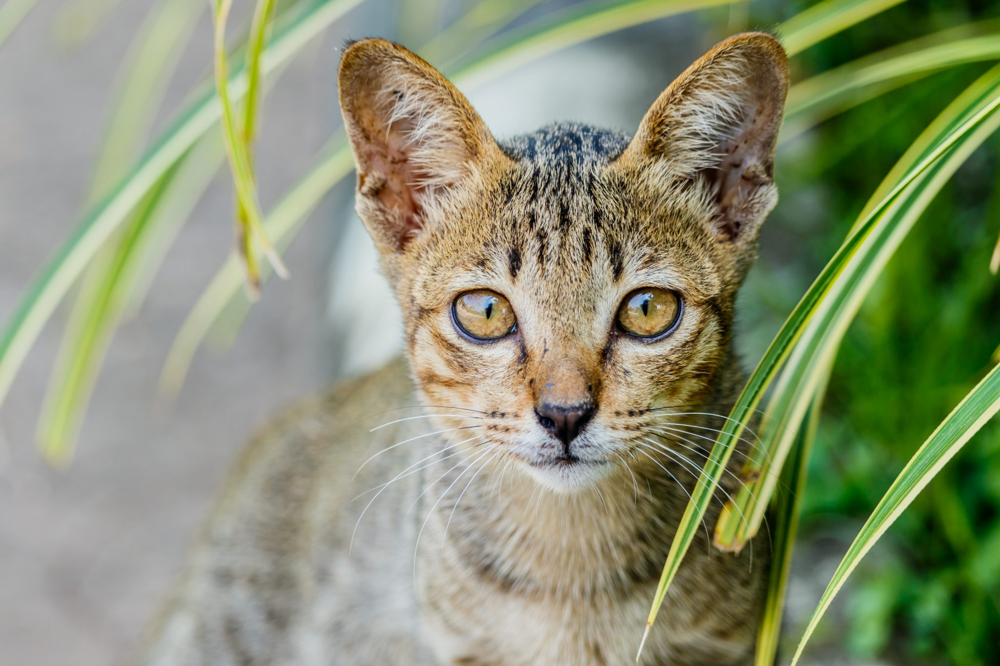

TODO: Transforme o texto "Voltar" abaixo em hiperlink que leva o usuário para a página com o sumário de todos os gatos
VoltarOs amantes de gatos sabem da predisposição da espécie em sofrer com problemas no trato urinário. Infelizmente, algumas raças têm ainda mais chances de serem acometidas por esse problema, como é o caso do Ashera.
